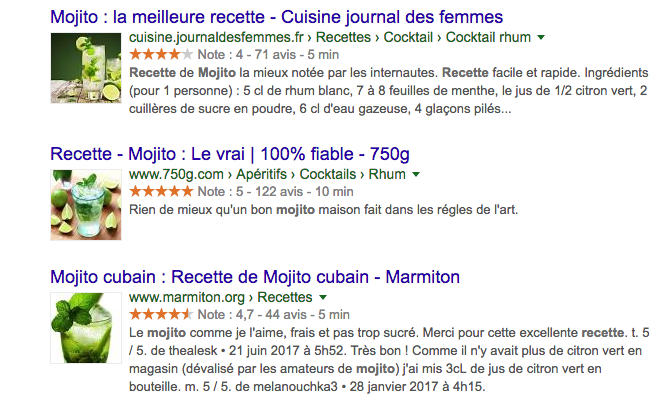

Comment faire le référencement google pour mon site?
Si vous cherchez à faire connaître votre site internet, augmenter le trafic et le rendre plus visible, il est important de bien faire le référencement google de ton site. En effet, c’est le meilleur moyen d’obtenir un trafic important, pertinent et gratuitement. 1ere Position, agence en référencement naturel, vous accompagne dans votre référencement en suivant quelques conseils pour avoir un bon référencement google de ton site : Rendre le site accessible pour Google Trouver les bons mots clés sur lesquels se positionner Suivre la SERP quotidiennement Créer du contenu qualitatif et pertinent Introduire des données structurées à votre site internet Optimiser la vitesse de chargement de votre site web.
RENDRE LE SITE ACCESSIBLE POUR GOOGLE
Pour l’indexation de site internet et le positionnement, Google analyse chaque site grâce à ses robots d’indexation Googlebot. S’ils ne parviennent pas à atteindre votre site internet parce qu’il n’est pas adapté, pas “crawlable” ou s’il l’accès est restreint pour les robots d’indexations dans le fichier robots.txt par exemple. Le contenu du site doit aussi être pensé pour les robots d’indexation. Il est indispensable de fournir du contenu qui est lisible pour Google. Ainsi, le contenu texte est crucial mais aussi les attributs image, la légende d’une vidéo… Aidez Google à visiter et à comprendre le contenu de votre site pour bien référencer son site sur Google ! Vouloir avoir un bon référencement google ou même les moteurs de recherche alternatifs n’a de sens uniquement si l’objectif est de se positionner sur les bons mots-clés. Pour bien choisir ses mots-clés, il est conseillé de prendre en compte le volume de recherche, la pertinence du mot-clé et la faisabilité. Utilisez des outils de recherche de mots-clés pour capter le bon trafic et donc le trafic qualifié et comprendre les intentions des internautes.
LA RECHERCHE DE MOTS-CLÉS
Vouloir référencer son site internet sur Google ou même les moteurs de recherche alternatifs n’a de sens uniquement si l’objectif est de se positionner sur les bons mots-clés. Pour bien choisir ses mots-clés, il est conseillé de prendre en compte le volume de recherche, la pertinence du mot-clé et la faisabilité. Utilisez des outils de recherche de mots-clés pour capter le bon trafic et donc le trafic qualifié et comprendre les intentions des internautes. Je souhaite me faire accompagner pour mon étude de mots clés
SUIVRE LA SERP POUR VOIR COMMENT GOOGLE VOUS PRÉSENTE
Avant d’arriver sur votre site internet, les internautes passent par la SERP (la page de résultats de recherche) de Google. Bien référencer son site sur Google passe par des résultats optimisés et attrayants. Pour améliorer le taux de clic et le trafic vers votre site web, il faut optimiser la meta title et la meta description, même si Google pourrait en choisir d’autres. Pour bien référencer son site sur Google, la SERP est un élément central.
RÉFÉRENCEMENT GOOGLE À UN MEILLEUR CONTENU
“Content is King” est une expression qui se confirme encore plus pour le référencement naturel. Créer du bon contenu signifie un contenu qualitatif et surtout un contenu adapté à la fois pour votre cible en respectant les règles de Google. La qualité du contenu attire à la fois les faveurs de Google mais surtout celles des internautes. Un contenu de qualité a beaucoup plus de chances d’être partagé et de venir viral. C’est un atout pour le référencement naturel car un site qualitatif obtiendra des backlinks et donc une autorité supplémentaire.
LES DONNÉES STRUCTURÉES POUR BIEN RÉFÉRENCER UN SITE
Bien référencer un site internet passe aussi par suivre les nouveautés de Google et les opportunités que le moteur de recherche propose. Depuis de nombreuses années, ce dernier intègre les données structurées pour apporter une meilleure expérience de recherche pour les internautes. On retrouve des éléments supplémentaires par rapport à un résultat de recherche classique : avis sous forme d’étoiles, photos, événement, produit… Les données structurées de votre site web augmentent les chances de se positionner sur Google. Les avantages de ce type de données sont très intéressantes :
OPTIMISER LA VITESSE DE CHARGEMENT DE VOTRE SITE POUR LE RÉFÉRENCER
Pour référencer un site internet, Google prend en compte des centaines de critères. Parmi eux, la vitesse de chargement se trouve dans les plus importants. Elle permet de limiter le taux de rebond, certains erreurs de chargement et un nombre de pages visitées faible. Avec une navigation de plus en plus mobile, il est important de passer à alléger vos sites internet pour s’adapter à de nouveaux usages. Il convient de faire une optimisation technique de votre site web pour le rendre plus rapide. Découvrez nos conseils pour augmenter la vitesse de chargement d’un site internet.